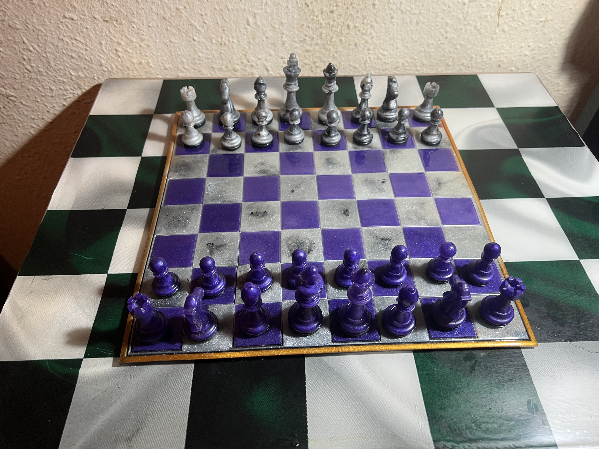
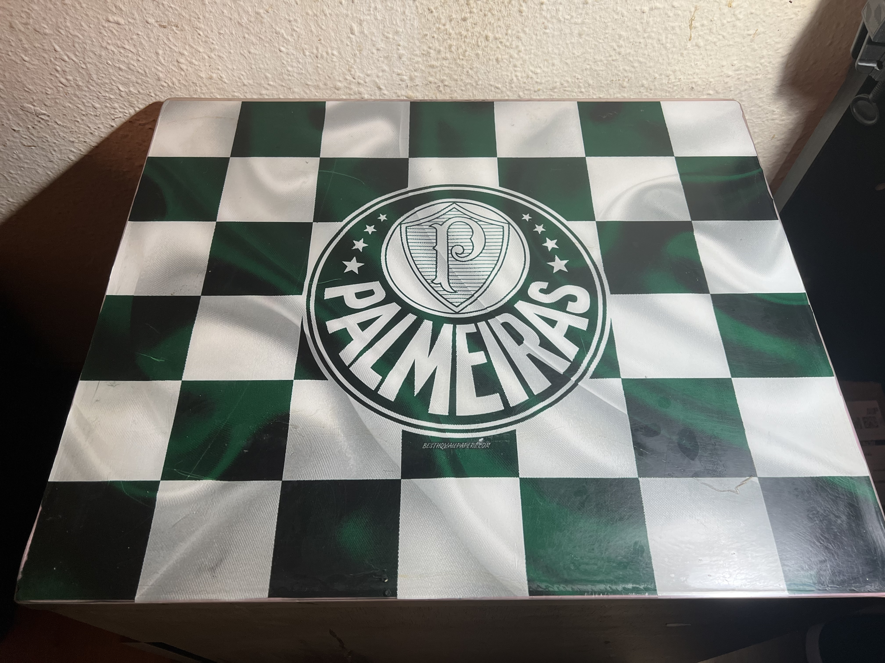
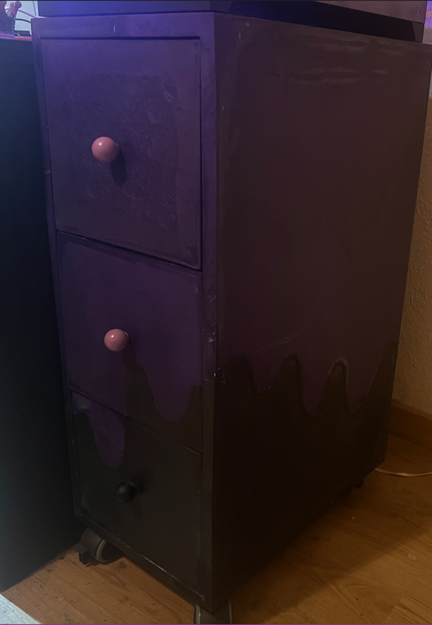
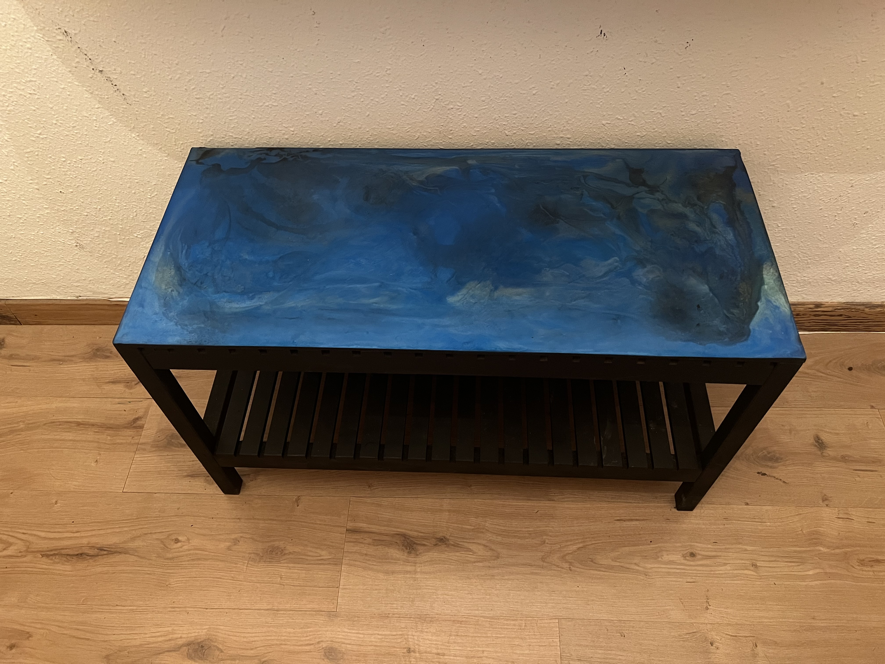

Aquí podréis hechar un vistazo a algunos de mis proyectos, que aunque sean todavía de nivel amateur, me han servido para aprender y avanzar en la práctica y acabado, haciendo que sean muy útiles para futuros proyectos mas complejos.
|  |
Tablero de ajedrez |
|---|---|
|
Este fué mi primer proyecto largo.Se trata de un juego de ajedrez de colores morado y mármol, donde tuve que rellenar cada molde por capas ( para crear el marmoleado del blanco y para la peana que es negra) y el tablero que tuve que crear cada cuadrado por separado, para luego ponerle un borde dorado. |
|
|  |
Vinilo y resina |
|
Aquí un ejemplo de como se puede poner cualquier imagen en vinilo, y al cubrir con resina transparente podemos plasmar una foto en cualquier superfície, sin preocuparnos de que el vinilo se despegue. |
|
|  |
Mueble entero cubierto |
|
Éste ha sido mi proyecto mas largo hasta ahora, también mi primer mueble. Se trata de una cajonera hecha con fibrapan, con todos los lados cubiertos de resina logrando un efecto de pintura vertida. |
|
|  |
Mesa restaurada |
|
Y aquí mi proyecto mejor acabado. Se trata de una restauración de un mueble de recibidor, el cual pinté de negro, puse una plancha de madera encima y la cubrí de resina logrando un efecto de "granito azul" |